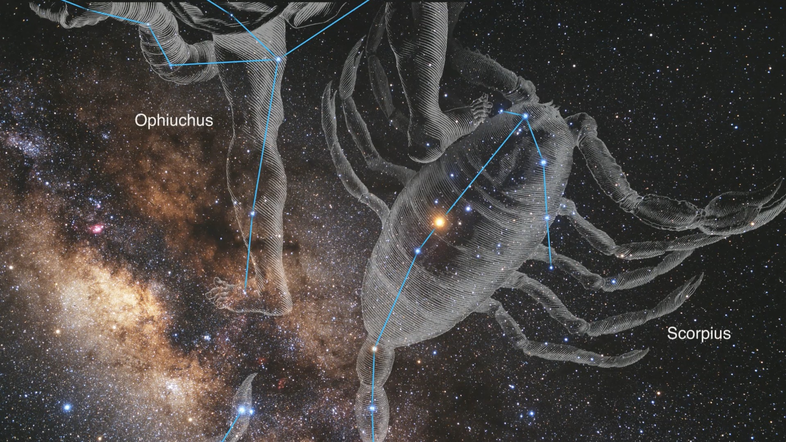

twitter.com
Stellar birth: Webb Space Telescope captures baby star ...
Prepare to be awestruck! @NASAWebb's NEW first anniversary image presents star birth as an impressionistic ...
Stellar birth: Webb Space Telescope captures baby star ...
Prepare to be awestruck! @NASAWebb's NEW first anniversary image presents star birth as an impressionistic ...